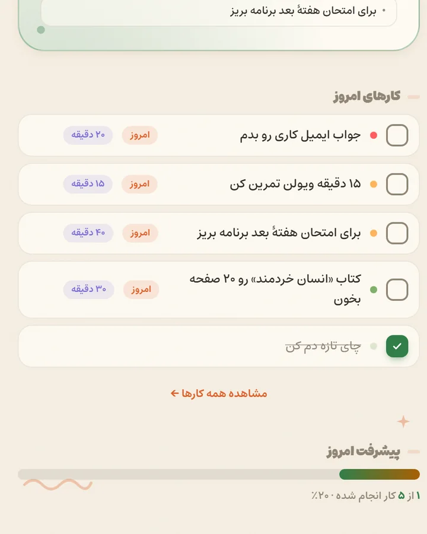
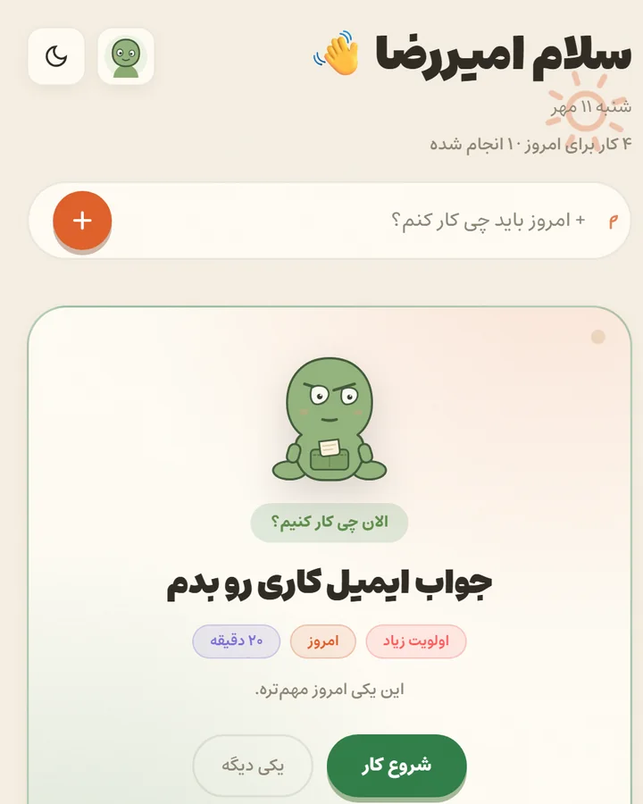
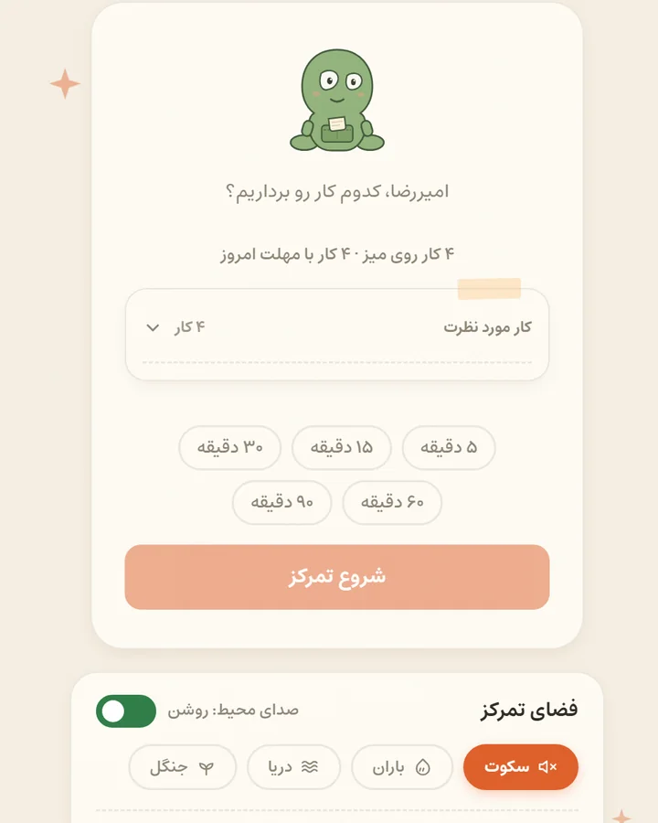

امروزت را سادهتر ببین.
کارهای امروز، پیشرفت امروز و حالوهوای روز — همه در یک نگاه، بدون آنکه لازم باشد چیزی را بشماری.

دفترچهای برای قدم بعدی
دَفتَرچه کمک میکند بفهمی الان چه کاری ارزش انجام دادن دارد.
رایگان، بدون حساب کاربری؛ دادههایت روی دستگاه خودت میماند.

چرا دَفتَرچه
تفاوت دَفتَرچه در مرتبکردن کارها نیست؛ در کوتاهکردن راهِ رسیدن به یک قدم بعدی است.
سه چیز معمولاً وسط راه میایستد؛ نه فهرست، نه یادآور.
هر کاری که مینویسی، همان لحظه مهم به نظر میرسد — و فهرست بلندتر و سنگینتر میشود.
بعضی روزها فقط زمان کم نیست؛ توان هم کم است. برنامهای که این را نمیداند، شکست میخورد.
لحظهای که باید انتخاب کنی از کدام شروع کنی، همان لحظهای است که همهچیز متوقف میشود.
میگویی امروز چه حالی داری.
یک کار پیشنهاد میشود، همراه با دلیلش.
همان یکی را شروع میکنی، نه کل فهرست را.
فقط همین یکی، تا تمام شود.
آخر روز میبینی چه چیزی جلو رفت.
همهچیز در یک دفترچهٔ آرام، بدون شلوغی و بدون حساب کاربری.
کارهای امروز، پیشرفت امروز و حالوهوای روز — همه در یک نگاه، بدون آنکه لازم باشد چیزی را بشماری.

دَفتَرچه با توجه به حال، وقت و اولویتها یک کار را پیشنهاد میدهد — و میگوید چرا همان.
یک جلسهٔ تمرکز، یک کار و یک تایمر آرام. بقیهٔ فهرست تا تمامشدن جلسه صبر میکند.

کتابهای PDF را در دفترچه نگه دار، پیشرفت مطالعه را ببین و همانجا حاشیه و یادداشت بگذار.
دفترچه چند همراه دارد که هرکدام برای یک نوع روز ساخته شدهاند.
امروز وقت کمی دارم.
دَفتَرچه کمک میکند کار مناسبتری انتخاب کنی.
انرژی ندارم.
برنامهات قرار نیست علیه شرایطت باشد.
کارها روی هم ریختهاند.
یک قدم را انتخاب کن.
میخواهم روی یک چیز تمرکز کنم.
Focus را شروع کن.